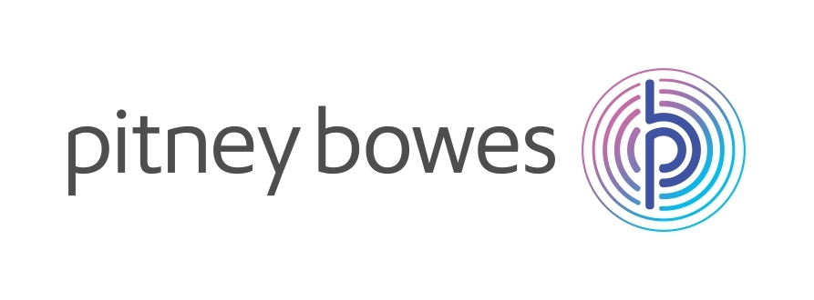
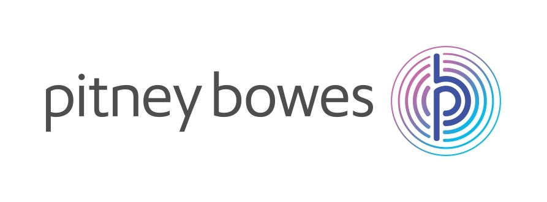

I am an Assistant Professor in the Department of Computer Science at Worcester Polytechnic Institute. I am interested in analyzing, understanding, and making sense of big data generated from various complex networks in many contexts, including management and computing with urban network data, large-scale network data sampling and measurement, online social behavior modeling, and spectral graph theory.
⧫ News
- Nov. 2016, I am invited to give a talk in Computer Science Colloquium at University of Minnesota, Twin Cities on Feb 2017.
- Nov. 2016, I am invited to give a talk in Computer Science Colloquium at Michigan Technological University on Jan 2017.
- Nov. 2016, I serve on Publicity Co-Chair for ACM SIGSPATIAL 2017.
- Nov. 2016, I gave a talk in Computer Science Colloquium at College of William and Mary.
- Oct. 2016, One paper was accepted by IEEE Transactions on Big Data (TBD).
- Oct. 2016, I serve on TPC for ACM SIGMETRICS 2017.
- Oct. 2016, I serve on TPC for IEEE ICDE 2017.
- Oct. 2016, I serve on TPC for IEEE ICCPS 2017.
- Sep. 2016, One paper was accepted by ICDM 2016.
- Sep. 2016, Two papers were accepted by SIGSPATIAL GIS 2016.
- Aug. 2016, One paper was accepted by ACM CIKM 2016.
- Jun. 2016, Congratulations to Ermal for our paper being accepted by ECML-PKDD 2016.
⧫ Current Research Projects
- Network Security, Measurements, and Design (selected publications)
- Malware Analysis, Detection and Classification. We design algorithms and systems for the characterization, detection and classification of malware using static and behavioral analysis.
- Publications
- [INFOCOM 2017] [NDSS 2016] [IEEE TIFS 2016] [IEEE HotWeb 2015] [CNS 2015] [COSE 2015] [CNS 2014] [WISA 2014; Best paper] [DIMVA 2014-a] [DIMVA 2014-b]
- Patent
- [US0106494] [US0106931] [US0244733] [EP2860658] [EP2860946] [EP2916256]
- Distributed Denial of Service: We design and develop a data-driven and model-guided approach to defending against application-level distributed denial of service (DDoS) attacks by botnets.
- Publications
- [WISA 2016] [IEEE DSN 2015] [ACM ASIA CCS 2015] [DIMVA 2015] [NDSS 2011].
- Media
- [New Scientist] [CBS News] [The register] [ZDNet] [Metro] [Minnesota Daily] [Slashdot]
- Domain Name System: We develop an arsenal of tools for understanding, measuring, quantifying, and improving the security, privacy, operation and transparency of the domain name system (DNS).
- Publications
- [ACM SIGCOMM 2016-p] [ARES 2016] [WISA 2014] [ACM WPES 2014] [WWW 2014-w]
- Media
- [Slate]
- Standard
- [DPRIVE-EVAL]
- Mobile Security. We design efficent and accurate techniques for detecting and classifying mobile malware, as well as techniques for improving privacy in mobile networks.
- Publications
- [COSE 2016] [Digitial Investigation 2015] [WISA 2014] [TDSC 2013]
- Internet of Things. We develop algorithms to improve the efficiency, security, and operation of mobile and wireless networks, including usable authentication techniques.
- Publications
- [COSE 2015] [IEEE CL 2014] [IEEE TMC 2014] [IEEE TVT 2013] [IEEE INFOCOM 2012].
- (Online) Privacy. We design techniques and tools to understand online privacy and improve privacy through distributed architectures of computation under powerful adversaries.
- Publications
- [TKDE 2016] [TDSC 2015] [WPES 2014] [TDSC 2013] [ICISC 2012] [ACM CCS 2010-p]
- Media
- [DeepDotWeb]
- Impact
- [.onion blocked in unbound 1.5.8] [RFC 7624] [DPRIVE-EVAL] [CFRG XMSS]
- Patents
- [US20140337460] [EP2802119] [US8745696]
- Trustworthy Social Systems. We develop techniques to improve system security and user privacy through social networks, including a finer understanding of social network properties from trustworthy social systems.
- Publications
- [IEEE TSC 2015] [ACM ASIACCS 2013-a] [ACM ASIACCS 2013-b] [IEEE TDSC 2013] [Ph.D. 2012] [MILCOM 2012] [ACM ASIACCS 2012] [ICC 2012] [INFOCOM 2011] [ACM IMC 2010]
- Media
- [MIT Technology Review] [The Verge] [Data News]
⧫ Selected Publications
- [ICDM'16] The Optimal Distribution of Electric-Vehicle Chargers across A City.
Chen Liu, Ke Deng, Chaojie Li, Jianxin Li, Yanhua Li, Jun Luo
IEEE International Conference on Data Mining, (8.5% Acceptance Ratio), Barcelona, Spain, December 12-15, 2016. - [SIGSPATIAL GIS'16] Scalable User Assignment in Power Grids: A Data Driven Approach.
Bo Lyu, Shijian Li, Yanhua Li, Jie Fu, Andrew Trapp, Haiyong Xie, Yong Liao
23rd ACM SIGSPATIAL International Conference on Advances in Geographic Information Systems, Oct 31 - Nov 3, 2016, San Francisco, CA, USA. - [SIGSPATIAL GIS'16] Mining the Most Influential k-Location Set from Massive Trajectories.
Yuhong Li, Jie Bao, Yanhua Li, Yu Zheng, Yingcai Wu, Zhiguo Gong
23rd ACM SIGSPATIAL International Conference on Advances in Geographic Information Systems, Oct 31 - Nov 3, 2016, San Francisco, CA, USA. - [CIKM'16] Collective Traffic Prediction with Partially Observed Traffic History using Location-Base Social Media.
Xinyue Liu, Xiangnan Kong, Yanhua Li
The 25th ACM International Conference on Information and Knowledge Management, Indianapolis, IN, on Oct 24 - 28, 2016. - [ECML-PKDD'16] PULSE: A Real Time System for Crowd Flow Prediction at Metropolitan Subway Stations.
Ermal Toto, Elke A. Rundensteiner, Yanhua Li, Richard Jordan, Mariya Ishutkina, Kajal Claypool, Jun Luo, and Fan Zhang
The European Conference on Machine Learning and Principles and Practice of Knowledge Discovery, (20% Acceptance Ratio), Riva del Garda, Italy, September 19–23, 2016 - [e-Energy'16] Shepherd: Sharing Energy for Privacy Preserving in Hybrid AC-DC Microgrids.
Zhichun Huang, Ting Zhu, Yu Gu, Yanhua Li
The seventh ACM International Conference on Future Energy Systems (ACM e-Energy), (22/73=30% Accepatance Ratio), Waterloo, Canada on June 21-24, 2016. - [ICDM'15] Dissecting Regional Weather-Traffic Sensitivity throughout a City.
Ye Ding, Yanhua Li, Ke Deng, Haoyu Tan, Mingxuan Yuan, Lionel M. Ni
IEEE International Conference on Data Mining, (18.2% Acceptance Ratio), Atlantic City, NJ, USA on Nov 14 - 17, 2015. - [CIKM'15] Sampling Big Trajectory Data.
Yanhua Li, Chi-Yin Chow, Ke Deng, Mingxuan Yuan, Jia Zeng, Jia-Dong Zhang, Qiang Yang, Zhi-Li Zhang
The 24th ACM International Conference on Information and Knowledge Management, (35/166=21.1% Acceptance Ratio), Melbourne, VIC, Australia on Oct 19 - 23, 2015. - [SIGMOD'15] Telco Churn Prediction with Big Data.
Yiqing Huang, Fangzhou Zhu, Mingxuan Yuan, Ke Deng, Yanhua Li, Bing Ni, Wenyuan Dai, Qiang Yang, Jia Zeng
ACM Conference on Management of Data, Melbourne, VIC, Australia on May 31 - June 4, 2015. - [ICDE'15] Growing the Charging Station Network for Electr ic Vehicles with Trajectory Data Analytics.
Yanhua Li, Jun Luo, Chi-Yin Chow, Kam-Lam Chan, Ye Ding, and Fan Zhang
31st IEEE International Conference on Data Engineering, Apr 13 - 17, 2015, Coex, Seoul, Korea. - [SIGSPATIAL GIS'14] LORE: Exploiting Sequential Influence for Location Recommendations.
Jia-Dong Zhang, Chi-Yin Chow, Yanhua Li
22nd ACM SIGSPATIAL International Conference on Advances in Geographic Information Systems, (39/184=21.2% Acceptance Ratio), Nov 4 - 7, 2014, Dallas, TX, USA. - [ICDE'14] Region Sampling and Estimation of GeoSocial Data with Dynamic Range Calibration.
Yanhua Li, Moritz Steiner, Jie Bao, Limin Wang, and Ting Zhu
The 30th International Conference on Data Engineering, (20.0% Acceptance Ratio), March 31 - April 04, 2014, Chicago, IL, USA. - [ICDCS'13] Coordinating In-Network Caching in Content-Centric Networks: Model and Analysis.
Yanhua Li, Haiyong Xie, Yonggang Wen, and Zhi-Li Zhang
The 33rd International Conference on Distributed Computing Systems, July 8-11, 2013, Philadelphia, USA. (13.1% Acceptance Ratio) - [WSDM'13] Influence Diffusion Dynamics and Influence Maximization in Social Networks with Friend and Foe Relationships.
Yanhua Li, Wei Chen, Yajun Wang, Zhi-Li Zhang
The 6th ACM International Conference on Web Search and Data Mining, February 4-8, 2013, Rome, Italy. (18.9% Acceptance Ratio)(This work is selected for oral presentation in a WSDM spotlight session.)
- [IMC'11] Counting YouTube Videos via Random Prefix Sampling.
Jia Zhou, Yanhua Li, Vijay Kumar Adhikari, Zhi-Li Zhang
The Internet Measurement Conference 2011, Berlin, Germany, November 2-4, 2011. (19.1% Acceptance Ratio) - [ICDCS'11] The Routing Continuum from Shortest Path to All-path: A Unifying Theory.
Yanhua Li, Zhi-Li Zhang, Daniel Boley
The 31st Int'l Conference on Distributed Computing Systems, Minneapolis, Minnesota, June 20-24, 2011. (15% Acceptance Ratio)(This work was included in the graduate course CSCI 8363 Numerical Linear Algebra in Data Exploration and CSCI 5221 Foundations of Advanced Networking in Computer Science Department at University of Minnesota, Twin Cities.)
- [INFOCOM'10] Random Walks on Digraphs: A Theoretical Framework for Estimating Transmission Costs in Wireless Routing.
Yanhua Li, Zhi-Li Zhang
The 29th IEEE Conference on Computer Communications, San Diego, CA, USA, March 15-19, 2010. (17.5% Acceptance Ratio)
Conference Papers
- [TBD] Detecting and Analyzing Urban Regions with High Impact of Weather Change on Transport.
Ye Ding, Yanhua Li, Ke Deng, Haoyu Tan, Mingxuan Yuan, Lionel M. Ni
IEEE International Conference on Data Mining, (8.5% Acceptance Ratio), Barcelona, Spain, December 12-15, 2016. - [GeoInformatica] Exploring Cell Tower Data Dumps for Supervised Learning-based Point-of-Interest Prediction.
Ran Wang, Chi-Yin Chow, Yan Lyu, Victor C.S. Lee, Sarana Nutanong, Yanhua Li, Mingxuan Yuan
Springer GeoInformatica, Accepted for publication, 2015. - [TNSM] How Much to Coordinate? Optimizing In-Network Caching in Content-Centric Networks.
Yanhua Li, Haiyong Xie, Yonggang Wen, Chi-Yin Chow, Zhi-Li Zhang
IEEE Transactions on Network and Services Management, Accepted for publication, 2015. - [TSC] iGeoRec: A Personalized and Efficient Geographical Location Recommendation Framework.
Jia-Dong Zhang, Chi-Yin Chow, Yanhua Li
IEEE Transactions on Services Computing, Accepted for publication, 2014. - [IM] Voter Model on Signed Social Networks.
Yanhua Li, Wei Chen, Yajun Wang, Zhi-Li Zhang
Internet Mathematics, Accepted for publication, 2014. - [TPDS] From Shortest-path to All-path: The Routing Continuum Theory and its applications.
Yanhua Li, Zhi-Li Zhang, and Daniel Boley
IEEE Transactions on Parallel and Distributed Systems, Vol.25 (Num. 7), pages 1745-1755, Jul 2014. - [TVT] Trading Optimality for Scalability in Large-scale Wireless Network Opportunistic Routing.
Yanhua Li, Abedelaziz Mohaisen, and Zhi-Li Zhang
IEEE Transactions on Vehicular Technology, Vol.62 (Num.5), Jun 2013. - [ToN] Random Walks and Green's Function on Digraphs: A Framework for Estimating Wireless Transmission Costs.
Yanhua Li, Zhi-Li Zhang
IEEE/ACM Transactions on Networking, 21(1), pages 135-148, Feb 2013. - [IM] Digraph Laplacian and the Degree of Asymmetry.
Yanhua Li, Zhi-Li Zhang
Internet Mathematics, 8(4), pages 381--401, Dec 2012.
Conference Papers
- [Thesis] Characterizing Diverse Link Patterns in Complex Networks: Theory and Applications. [PDF][Bibtex]
PhD Thesis with University of Minnesota, Twin Cities, August 2013.
PhD Thesis
⧫ Representative Publications
⧫ Sponsors
Sincere gratitute to our sponsors from NSF and Pitney Bowes
 

⧫ Selected Grants & Awards
- Pitney Bowes Inc. A gift research funding, Dec. 2015
- 2015 NSF Early-Career Investigators Workshop on CPS and Smart City, Travel Award, 2015
- SIMPLEX 2015, Best Paper Award, 2015
- IEEE ICDCS 2013, Travel Grant, 2013
- IEEE ICNP 2012, Travel Grant, 2012
- LNCS WAW 2012, Travel Grant, 2012
- USENIX NSDI 2012, Travel Grant, 2012
- NetSciCom 2012, (Co-located with infocom 2012) Travel Grant, 2012
- Received MSRA Internship Excellence Award, Summer 2011
- Best Student Presentation Award in CASIN 2011, Beijing, July 22, 2011
- MASS 2009 Travel Grant, NSF, 2009
⧫ Publications News
-
Interested in joining our group?
- 06/2016
- HotWeb -- DNS
- 08/2016
- WISA -- DNS and DDoS
- 06/2016
- ACM SIGOCMM-- DNS
- 06/2016
- ARES -- Domain typosquatting
- 10/2015
- ISOC NDSS -- Bot detection
- 09/2015
- IEEE CNS -- Malware detection
- 09/2015
- IEEE HotWeb -- Web security
- 06/2016
- IEEE TDSC-- DDoS
- 06/2016
- ACM/IEEE ToN -- DNS
- 06/2016
- IEEE TIFS -- Botnets
- 06/2016
- IEEE TKDE 2016 -- P-MPC
- 01/2016
- COSE 2016 -- Malware
- 09/2015
- Digital Investigation 2016 -- Malware
⧫ Professional Appointments
- Assistant Professor, summer 2015 --
Computer Science Department at WPI - Post-doctoral Researcher, Dec 2014 to summer 2015
Computer Science & Engineering Department, University of Minnesota, Twin Cities - Researcher, Aug 2013 to Dec 2014
HUAWEI Noah's Ark LAB, Hong Kong - Research Intern, Apr 2013 to Jul 2013 & Sep 2011 to Jan 2012
HUAWEI Research LAB, Santa Clara, CA - Research Intern, Jun 2012 to Aug 2012
Bell Labs, Murray Hill, NJ - Research Intern, May 2011 to Aug 2011
Microsoft Research Asia, Beijing, China - Research Assistant, Sep 2009 to Aug 2013
Computer Science & Engineering Department, University of Minnesota, Twin Cities
⧫ Education
- PhD in Computer Science, University of Minnesota, Twin Cities, Minneapolis, MN, 2013, advised by Prof. Zhi-Li Zhang.
- PhD in Electronic Engineering, Beijing University of Posts and Telecommunications, China, 2009, advised by Prof. Yuan-An Liu.
- MS in Electronic Engineering, Sichuan University, China, 2006.
- BE in Electronic Engineering, Sichuan University, China, 2003